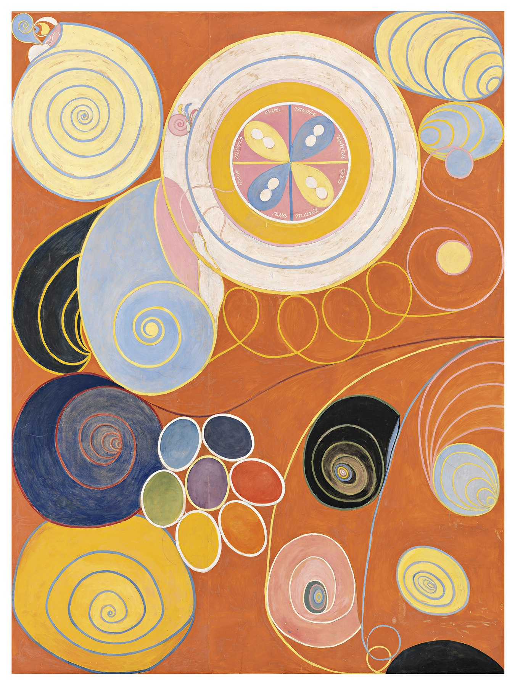

The Ten Largest, No. 3, Youth

The first thing that hits you is the color — a burnt-orange field so saturated it reads like a lit match struck across the canvas. Only after that do you register the giant spirals, the concentric rings, the medallion inscribed "Ave Maria." This wasn't a decorative geometry exercise. Hilma af Klint painted it years before Kandinsky's credited first abstraction — then locked it away for nearly half a century, waiting for the world to catch up.
01Composition
Youth is the third canvas in The Ten Largest, a set of ten paintings tracing four stages of a human life — childhood, youth, adulthood, old age. This one stands for youth. At 328 × 240 cm, it's tall enough that you look up into it rather than across it.
The picture is carved by a few enormous circles and spirals: a golden concentric disc top left, a huge bullseye medallion lettered "Ave Maria" at center, blue-black shell-like spirals scattered lower right, and a cluster of small jewel-colored ovals pressed together lower left, like a bunch of grapes. There's no horizon, no vanishing point — it reads as a diagram, not a window.
02Color Theory
The ground is a dense burnt orange that carries almost the whole canvas, holding every warm/cool contrast steady against it. Af Klint's own notes describe blue tied to the lily and the feminine principle, yellow to the rose and the masculine principle, and green marking their shared unity.
Blue and yellow spirals keep appearing in pairs; the medallion's central quadrants pair blue and yellow ovoids against each other. Color here isn't decoration — it's an argument.
03Technique
Between 1906 and 1907, af Klint painted these works after séances held with four fellow women artists in a secret circle called The Five (De Fem). By her own account, the forms and colors came dictated by a "High Master" spirit named Amaliel — she described herself less as an author than as a hand holding the brush.
The huge scale let her work standing, mural-style, in wide sweeping strokes. The spirals carry the continuous speed of something close to automatic writing; pencil underdrawing is still visible near the edges of the original.
04Why It Moves Us
Part of what keeps this painting current is its sheer freedom — geometry, script, and organic form coexisting without obeying any painting movement of its time. Af Klint began this body of work in 1906, years before Kandinsky, Malevich, and Mondrian let go of representation in their own painting.
The other part is its fate: af Klint believed the world wasn't ready, and rarely showed these works in her lifetime. The real turn came almost a century later — a 2013 retrospective at Moderna Museet Stockholm, then the Guggenheim's 2018–19 "Paintings for the Future," which rewrote her back into the origin story of abstraction.
05Background
Hilma af Klint (1862–1944) trained at Stockholm's Royal Academy of Fine Arts and earned her living early on with conventional botanical drawings and portraits, while running The Five — a private study group in spiritualism and theosophy. The Ten Largest was conceived for a spiral temple she imagined, meant to be walked through in sequence, tracing a life from birth to age. That building was never built.
The Guggenheim's 2018 retrospective became the most-visited exhibition in the museum's history — work that had been kept out of sight for decades finally reaching an audience far larger than she ever anticipated.
06Steal This
- Anchor a composition with one saturated warm ground — every clashing accent color sits safely on top of it.
- Repeat a complementary pair (blue/yellow) across the frame for built-in tension without visual conflict.
- Cluster a handful of high-saturation "gem" accents next to large flat fields instead of spreading attention evenly.
{kind=link}